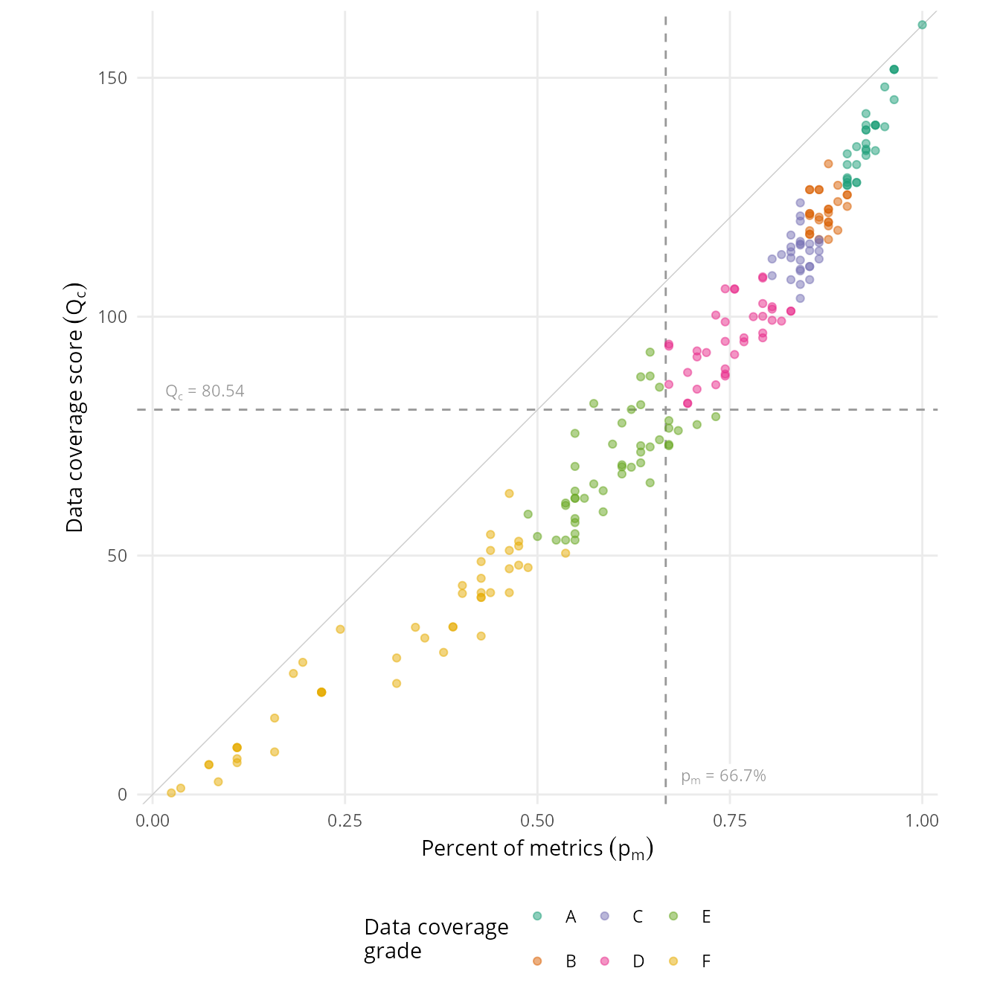
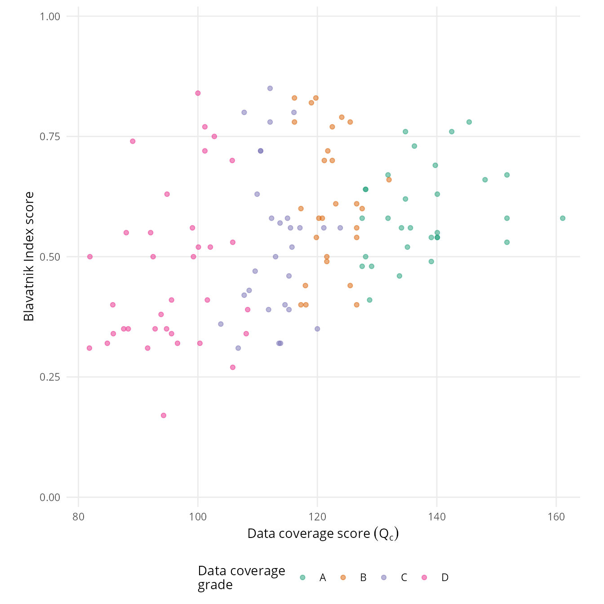

| Data coverage grade | Data coverage thresholds1 | Number of countries |
|---|---|---|
| Countries included in the index | ||
| A | Qc ≥ 127.50, pm ≥ 90.24% | 30 |
| B | Qc ≥ 116.17, pm ≥ 85.37% | 27 |
| C | Qc ≥ 102.75, pm ≥ 80.49% | 28 |
| D | Qc ≥ 80.54, pm ≥ 66.67% | 35 |
| Countries and territories not included in the index | ||
| E2 | Qc ≥ 53.25, pm ≥ 48.78% | 46 |
| F | Qc > 0, pm > 0% | 46 |
| Ungraded (no data) | Qc = 0, pm = 0% | 43 |
| 1 Qc is the data coverage score, pm is the percent of total metrics | ||
| 2 Hong Kong included in many of the source datasets used by the Index and has Qc and pm scores equivalent to grade D. As a territory of China, Hong Kong is not included in the Blavatnik Index, therefore it has been included in this summary table in the total number of countries for grade E. | ||
9 Data coverage and country selection
How we assess country data coverage and use this to determine the countries in the final Index.
Any analytical exercise needs to carefully consider the quality of its data, this is particularly important when combining data from different data sources. This section explores country data quality, in particular data availability for countries, to determine inclusion in the Index’s calculations.
Of the 212 countries and territories which have data for at least one of the 86 metrics used for the global index, only one country (Mexico) has data for all 86 metrics, as a result an approach is needed to consider a country’s data coverage for determining its inclusion in the calculation of the Index.
A simple approach for determining coverage would be to consider simply the total number of metrics a country has data for (\(m_c\)) as a proportion of the total number of possible metrics (\(M\)).
\[ p_m = \frac{m_c}{M} \]
However, this approach does not consider how a country’s data is spread across the structure of our conceptual framework and data model – a country with a higher proportion of metrics concentrated in fewer themes would do better on this simple measure than a country with a lower proportion of metrics spread across more themes. As described in section 6 missing data is not subject to imputation, good coverage of the data model is therefore an important consideration to ensure that the implicit estimate of missing data will come from “sibling” components in the data model.
Based on the chi-square test we have developed an algorithm for assessing a country’s data availability. This algorithm assesses both the volume of metrics a country has as well as the spread of that data over the data model. For each country-theme combination, an information quotient is calculated as the square of the difference between the total number of metrics a country has for that theme (\(m_{t,c}\)) and the number of indicators a country has for that theme (\(i_{t,c}\)) divided by the overall number of indicators in that theme (\(i_t\)). The overall data coverage score for a country (\(Q_c\)) is calculated as the sum of these country-theme information quotients adjusted for overall coverage across the themes, calculated as the number of themes a country has data for (\(t_c\)) divided by overall number of themes (\(T\)).
\[ Q_c= \displaystyle\sum_{t=1}^{t_c} \frac{(m_{t,c}-i_{t,c}+1)^2}{i_t} \]
Having calculated the data coverage algorithm, we can set criteria to determine inclusion in the calculation of the Index and its components. Two principal criteria were selected :
- The overall data coverage score (\(Q_c\)) is greater than or equal to half its theoretical maximum value (i.e. the score a country would achieve if it has data for all metrics). The maximum data coverage score is 161.08, the threshold value is therefore 80.54.
- While the overall score does take into consideration the number of metrics, the overall percentage of metrics a country has (\(p_m\)) is also retained as a secondary threshold. It was decided to only include countries and territories with at least 2/3rds of overall metrics.
These criteria give rise to a selection of 120 countries and territories1.
The inclusion criteria provide a binary state of whether countries are included or not however we can also devise a grading scheme using the same measures to determine inclusion to give a better sense of an individual country’s data coverage. For countries and territories above thresholds for inclusion in the Index the lower quartile, median and upper quartile of their data coverage score and percentage of metrics are used to define the boundaries for the first four grades (A-D); for countries and territories below the thresholds for inclusion in the Index the median of their data coverage score and percentage of metrics is used to define the boundary between the fifth and sixth grade (E-F). The following tables provide summarises of data coverage metrics: Table 9.1 by grade; Table 9.2 by regional, economic and population groupings. Full data coverage metrics for all countries and territories are provided in Table 9.3 and Table 9.4.
| Countries included in the Index | UN members not included | Other entities not included1 | |
|---|---|---|---|
| All countries and territories | 120 | 74 | 60 |
| Geographic region | |||
| Americas | 22 | 13 | 22 |
| Asia and Pacific | 18 | 19 | 18 |
| Eastern Europe | 20 | 2 | 1 |
| Middle East, North Africa & Central Asia | 15 | 14 | 4 |
| Sub-Saharan Africa | 29 | 19 | 7 |
| Western Europe | 16 | 7 | 8 |
| Income group (World Bank, 2023) | |||
| High income | 39 | 21 | 24 |
| Low income | 13 | 13 | — |
| Lower middle income | 33 | 21 | — |
| Upper middle income | 35 | 18 | 1 |
| No World Bank income classification | — | 1 | 35 |
| Population size (World Bank, 2022) | |||
| Less than 5 million | 26 | 46 | 20 |
| 5 million to 10 million | 23 | 7 | 2 |
| 10 million to 25 million | 27 | 9 | — |
| 25 million to 50 million | 20 | 7 | — |
| 50 million or greater | 24 | 5 | — |
| No population data | — | — | 38 |
| 1 Other entities includes countries that are not UN members, dependent and other territories of other countries, disputed countries and territories, or those with limited recognition. | |||
As shown in Figure 9.1, while closely correlated there is a slightly non-linear relationship between the data coverage score and the percent of metrics measures, this is expected since the data coverage score applies a penalty for a country not having complete data across the measurement framework.

There is no statistically significant correlation between a country’s overall score in the Blavatnik Index and either its data coverage score or the percent of metrics it has data for. However, as Figure 9.2 shows, there does appear a relationship between the minimum score for the Blavatnik Index and the data coverage score2, which is likely a function of the data normalisation process that results in country scores becoming relative measures between 0 and 1.

| Country | Code | Status | Region | Income group |
Data coverage
|
% metrics | |
|---|---|---|---|---|---|---|---|
| Grade | Score | ||||||
| Albania | ALB | UN member | Eastern Europe | Upper middle income | A | 131.83 | 91.5% |
| Angola | AGO | UN member | Sub-Saharan Africa | Lower middle income | C | 113.83 | 85.4% |
| Argentina | ARG | UN member | Americas | Upper middle income | A | 140.08 | 92.7% |
| Armenia | ARM | UN member | Middle East, North Africa & Central Asia | Upper middle income | C | 123.83 | 84.1% |
| Australia | AUS | UN member | Asia and Pacific | High income | B | 124.08 | 89.0% |
| Austria | AUT | UN member | Western Europe | High income | D | 89.08 | 74.4% |
| Azerbaijan | AZE | UN member | Middle East, North Africa & Central Asia | Upper middle income | D | 92.50 | 72.0% |
| Bangladesh | BGD | UN member | Asia and Pacific | Lower middle income | B | 118.08 | 89.0% |
| Belarus | BLR | UN member | Eastern Europe | Upper middle income | C | 111.83 | 84.1% |
| Belgium | BEL | UN member | Western Europe | High income | D | 102.75 | 79.3% |
| Benin | BEN | UN member | Sub-Saharan Africa | Lower middle income | B | 121.58 | 85.4% |
| Bolivia | BOL | UN member | Americas | Lower middle income | B | 118.00 | 85.4% |
| Botswana | BWA | UN member | Sub-Saharan Africa | Upper middle income | A | 128.08 | 91.5% |
| Brazil | BRA | UN member | Americas | Upper middle income | A | 128.08 | 90.2% |
| Bulgaria | BGR | UN member | Eastern Europe | Upper middle income | A | 151.75 | 96.3% |
| Burkina Faso | BFA | UN member | Sub-Saharan Africa | Low income | C | 115.25 | 84.1% |
| Cambodia | KHM | UN member | Asia and Pacific | Lower middle income | C | 106.75 | 84.1% |
| Cameroon | CMR | UN member | Sub-Saharan Africa | Lower middle income | C | 103.83 | 84.1% |
| Canada | CAN | UN member | Americas | High income | B | 119.75 | 87.8% |
| Chile | CHL | UN member | Americas | High income | A | 139.75 | 95.1% |
| China | CHN | UN member | Asia and Pacific | Upper middle income | D | 99.08 | 81.7% |
| Colombia | COL | UN member | Americas | Upper middle income | A | 128.08 | 91.5% |
| Costa Rica | CRI | UN member | Americas | Upper middle income | A | 140.08 | 93.9% |
| Croatia | HRV | UN member | Eastern Europe | High income | A | 134.75 | 92.7% |
| Czechia | CZE | UN member | Eastern Europe | High income | A | 151.75 | 96.3% |
| Denmark | DNK | UN member | Western Europe | High income | B | 116.17 | 87.8% |
| Dominican Republic | DOM | UN member | Americas | Upper middle income | B | 126.58 | 85.4% |
| Ecuador | ECU | UN member | Americas | Upper middle income | C | 115.75 | 84.1% |
| El Salvador | SLV | UN member | Americas | Upper middle income | C | 114.58 | 82.9% |
| Estonia | EST | UN member | Eastern Europe | High income | A | 145.42 | 96.3% |
| Eswatini | SWZ | UN member | Sub-Saharan Africa | Lower middle income | D | 93.83 | 67.1% |
| Ethiopia | ETH | UN member | Sub-Saharan Africa | Low income | D | 85.75 | 73.2% |
| Finland | FIN | UN member | Western Europe | High income | B | 119.00 | 87.8% |
| France | FRA | UN member | Western Europe | High income | B | 125.50 | 90.2% |
| Gabon | GAB | UN member | Sub-Saharan Africa | Upper middle income | D | 81.83 | 69.5% |
| Gambia | GMB | UN member | Sub-Saharan Africa | Low income | D | 96.58 | 79.3% |
| Georgia | GEO | UN member | Middle East, North Africa & Central Asia | Upper middle income | B | 120.83 | 86.6% |
| Germany | DEU | UN member | Western Europe | High income | D | 101.17 | 82.9% |
| Ghana | GHA | UN member | Sub-Saharan Africa | Lower middle income | A | 133.75 | 92.7% |
| Greece | GRC | UN member | Western Europe | High income | A | 131.83 | 90.2% |
| Guatemala | GTM | UN member | Americas | Upper middle income | C | 115.25 | 85.4% |
| Guinea | GIN | UN member | Sub-Saharan Africa | Lower middle income | D | 85.83 | 67.1% |
| Guyana | GUY | UN member | Americas | High income | C | 120.00 | 84.1% |
| Honduras | HND | UN member | Americas | Lower middle income | B | 126.58 | 85.4% |
| Hungary | HUN | UN member | Eastern Europe | High income | C | 115.00 | 84.1% |
| India | IND | UN member | Asia and Pacific | Lower middle income | C | 113.75 | 86.6% |
| Indonesia | IDN | UN member | Asia and Pacific | Upper middle income | B | 123.08 | 90.2% |
| Ireland | IRL | UN member | Western Europe | High income | B | 122.50 | 87.8% |
| Israel | ISR | UN member | Middle East, North Africa & Central Asia | High income | D | 105.75 | 75.6% |
| Italy | ITA | UN member | Western Europe | High income | D | 101.17 | 82.9% |
| Jamaica | JAM | UN member | Americas | Upper middle income | A | 129.08 | 90.2% |
| Jordan | JOR | UN member | Middle East, North Africa & Central Asia | Lower middle income | A | 135.58 | 91.5% |
| Kazakhstan | KAZ | UN member | Middle East, North Africa & Central Asia | Upper middle income | B | 127.50 | 89.0% |
| Kenya | KEN | UN member | Sub-Saharan Africa | Lower middle income | A | 139.08 | 92.7% |
| Kosovo | XKK | Not an ISO 3166-1 entitty | Eastern Europe | Upper middle income | D | 105.83 | 74.4% |
| Kyrgyzstan | KGZ | UN member | Middle East, North Africa & Central Asia | Lower middle income | B | 125.50 | 90.2% |
| Latvia | LVA | UN member | Eastern Europe | High income | A | 136.25 | 92.7% |
| Lebanon | LBN | UN member | Middle East, North Africa & Central Asia | Lower middle income | D | 94.75 | 76.8% |
| Lesotho | LSO | UN member | Sub-Saharan Africa | Lower middle income | D | 88.33 | 69.5% |
| Liberia | LBR | UN member | Sub-Saharan Africa | Low income | C | 113.58 | 82.9% |
| Lithuania | LTU | UN member | Eastern Europe | High income | A | 142.50 | 92.7% |
| Madagascar | MDG | UN member | Sub-Saharan Africa | Low income | D | 84.83 | 70.7% |
| Malawi | MWI | UN member | Sub-Saharan Africa | Low income | D | 95.58 | 79.3% |
| Malaysia | MYS | UN member | Asia and Pacific | Upper middle income | B | 117.25 | 85.4% |
| Malta | MLT | UN member | Western Europe | High income | C | 109.92 | 84.1% |
| Mauritius | MUS | UN member | Sub-Saharan Africa | Upper middle income | D | 94.83 | 74.4% |
| Mexico | MEX | UN member | Americas | Upper middle income | A | 161.08 | 100.0% |
| Moldova | MDA | UN member | Eastern Europe | Upper middle income | C | 112.33 | 82.9% |
| Mongolia | MNG | UN member | Asia and Pacific | Lower middle income | B | 126.58 | 86.6% |
| Montenegro | MNE | UN member | Eastern Europe | Upper middle income | D | 100.08 | 79.3% |
| Morocco | MAR | UN member | Middle East, North Africa & Central Asia | Lower middle income | D | 99.25 | 80.5% |
| Mozambique | MOZ | UN member | Sub-Saharan Africa | Low income | D | 108.08 | 79.3% |
| Myanmar | MMR | UN member | Asia and Pacific | Lower middle income | D | 105.83 | 75.6% |
| Namibia | NAM | UN member | Sub-Saharan Africa | Upper middle income | D | 101.58 | 80.5% |
| Nepal | NPL | UN member | Asia and Pacific | Lower middle income | C | 107.75 | 82.9% |
| Netherlands | NLD | UN member | Western Europe | High income | B | 122.50 | 87.8% |
| New Zealand | NZL | UN member | Asia and Pacific | High income | C | 116.08 | 86.6% |
| Nicaragua | NIC | UN member | Americas | Lower middle income | D | 91.58 | 70.7% |
| Niger | NER | UN member | Sub-Saharan Africa | Low income | D | 92.83 | 70.7% |
| Nigeria | NGA | UN member | Sub-Saharan Africa | Lower middle income | A | 128.75 | 90.2% |
| North Macedonia | MKD | UN member | Eastern Europe | Upper middle income | D | 88.00 | 74.4% |
| Norway | NOR | UN member | Western Europe | High income | D | 100.00 | 78.0% |
| Pakistan | PAK | UN member | Asia and Pacific | Lower middle income | D | 95.58 | 76.8% |
| Panama | PAN | UN member | Americas | High income | B | 126.58 | 86.6% |
| Paraguay | PRY | UN member | Americas | Upper middle income | A | 134.08 | 90.2% |
| Peru | PER | UN member | Americas | Upper middle income | A | 140.08 | 93.9% |
| Philippines | PHL | UN member | Asia and Pacific | Lower middle income | A | 140.08 | 93.9% |
| Poland | POL | UN member | Eastern Europe | High income | B | 132.00 | 87.8% |
| Portugal | PRT | UN member | Western Europe | High income | C | 110.50 | 85.4% |
| Romania | ROU | UN member | Eastern Europe | High income | A | 151.75 | 96.3% |
| Russia | RUS | UN member | Eastern Europe | Upper middle income | C | 115.50 | 86.6% |
| Rwanda | RWA | UN member | Sub-Saharan Africa | Low income | D | 102.08 | 80.5% |
| Saudi Arabia | SAU | UN member | Middle East, North Africa & Central Asia | High income | D | 92.08 | 75.6% |
| Senegal | SEN | UN member | Sub-Saharan Africa | Lower middle income | C | 108.58 | 80.5% |
| Serbia | SRB | UN member | Eastern Europe | Upper middle income | C | 117.08 | 82.9% |
| Sierra Leone | SLE | UN member | Sub-Saharan Africa | Low income | D | 87.58 | 74.4% |
| Singapore | SGP | UN member | Asia and Pacific | High income | C | 112.08 | 80.5% |
| Slovakia | SVK | UN member | Eastern Europe | High income | A | 148.08 | 95.1% |
| Slovenia | SVN | UN member | Eastern Europe | High income | B | 121.17 | 85.4% |
| South Africa | ZAF | UN member | Sub-Saharan Africa | Upper middle income | A | 135.08 | 92.7% |
| South Korea | KOR | UN member | Asia and Pacific | High income | A | 134.75 | 93.9% |
| Spain | ESP | UN member | Western Europe | High income | B | 116.17 | 86.6% |
| Sri Lanka | LKA | UN member | Asia and Pacific | Lower middle income | C | 109.58 | 84.1% |
| Sudan | SDN | UN member | Middle East, North Africa & Central Asia | Low income | D | 94.25 | 67.1% |
| Sweden | SWE | UN member | Western Europe | High income | C | 110.50 | 85.4% |
| Tajikistan | TJK | UN member | Middle East, North Africa & Central Asia | Lower middle income | D | 100.33 | 73.2% |
| Thailand | THA | UN member | Asia and Pacific | Upper middle income | B | 120.25 | 86.6% |
| Togo | TGO | UN member | Sub-Saharan Africa | Low income | B | 117.25 | 85.4% |
| Trinidad & Tobago | TTO | UN member | Americas | High income | B | 121.58 | 85.4% |
| Tunisia | TUN | UN member | Middle East, North Africa & Central Asia | Lower middle income | D | 81.92 | 69.5% |
| Türkiye | TUR | UN member | Middle East, North Africa & Central Asia | Upper middle income | C | 121.08 | 84.1% |
| Uganda | UGA | UN member | Sub-Saharan Africa | Low income | A | 139.08 | 92.7% |
| Ukraine | UKR | UN member | Eastern Europe | Lower middle income | A | 127.50 | 90.2% |
| United Kingdom | GBR | UN member | Western Europe | High income | C | 107.75 | 85.4% |
| United States | USA | UN member | Americas | High income | C | 112.08 | 86.6% |
| Uruguay | URY | UN member | Americas | High income | B | 121.75 | 87.8% |
| Uzbekistan | UZB | UN member | Middle East, North Africa & Central Asia | Lower middle income | A | 127.50 | 90.2% |
| Vietnam | VNM | UN member | Asia and Pacific | Lower middle income | B | 119.83 | 87.8% |
| Zambia | ZMB | UN member | Sub-Saharan Africa | Lower middle income | C | 113.00 | 81.7% |
| Zimbabwe | ZWE | UN member | Sub-Saharan Africa | Lower middle income | D | 108.33 | 79.3% |
| Country/Territory | Code | Status | Region | Income group |
Data coverage
|
% metrics | |
|---|---|---|---|---|---|---|---|
| Grade | Score | ||||||
| Afghanistan | AFG | UN member | Middle East, North Africa & Central Asia | Low income | E | 77.42 | 70.7% |
| Åland | ALA | Other ISO 3166-1 entity | Western Europe | — | — | — | — |
| Algeria | DZA | UN member | Middle East, North Africa & Central Asia | Lower middle income | E | 53.25 | 53.7% |
| American Samoa | ASM | Other ISO 3166-1 entity | Asia and Pacific | High income | — | — | — |
| Andorra | AND | UN member | Western Europe | High income | F | 21.42 | 22.0% |
| Anguilla | AIA | Other ISO 3166-1 entity | Americas | — | F | 6.25 | 7.3% |
| Antigua & Barbuda | ATG | UN member | Americas | High income | E | 54.00 | 50.0% |
| Aruba | ABW | Other ISO 3166-1 entity | Americas | High income | F | 34.58 | 24.4% |
| Bahamas | BHS | UN member | Americas | High income | F | 51.08 | 46.3% |
| Bahrain | BHR | UN member | Middle East, North Africa & Central Asia | High income | E | 62.00 | 54.9% |
| Barbados | BRB | UN member | Americas | High income | E | 85.25 | 65.9% |
| Belize | BLZ | UN member | Americas | Upper middle income | E | 77.75 | 61.0% |
| Bermuda | BMU | Other ISO 3166-1 entity | Americas | High income | F | 2.67 | 8.5% |
| Bhutan | BTN | UN member | Asia and Pacific | Lower middle income | E | 81.58 | 63.4% |
| Bosnia & Herzegovina | BIH | UN member | Eastern Europe | Upper middle income | E | 69.42 | 63.4% |
| Bouvet Island | BVT | Other ISO 3166-1 entity | Americas | — | — | — | — |
| British Indian Ocean Territory | IOT | Other ISO 3166-1 entity | Sub-Saharan Africa | — | — | — | — |
| British Virgin Islands | VGB | Other ISO 3166-1 entity | Americas | High income | — | — | — |
| Brunei | BRN | UN member | Asia and Pacific | High income | F | 32.75 | 35.4% |
| Burundi | BDI | UN member | Sub-Saharan Africa | Low income | E | 87.58 | 64.6% |
| Cabo Verde | CPV | UN member | Sub-Saharan Africa | Lower middle income | E | 60.50 | 53.7% |
| Caribbean Netherlands | BES | Other ISO 3166-1 entity | Americas | — | — | — | — |
| Cayman Islands | CYM | Other ISO 3166-1 entity | Americas | High income | — | — | — |
| Central African Republic | CAF | UN member | Sub-Saharan Africa | Low income | E | 80.58 | 62.2% |
| Chad | TCD | UN member | Sub-Saharan Africa | Low income | E | 54.58 | 54.9% |
| Christmas Island | CXR | Other ISO 3166-1 entity | Asia and Pacific | — | — | — | — |
| Cocos (Keeling) Islands | CCK | Other ISO 3166-1 entity | Asia and Pacific | — | — | — | — |
| Comoros | COM | UN member | Sub-Saharan Africa | Lower middle income | F | 63.00 | 46.3% |
| Congo (DRC) | COD | UN member | Sub-Saharan Africa | Low income | E | 76.17 | 68.3% |
| Congo (ROC) | COG | UN member | Sub-Saharan Africa | Lower middle income | E | 73.33 | 59.8% |
| Cook Islands | COK | Other ISO 3166-1 entity | Asia and Pacific | — | F | 27.67 | 19.5% |
| Côte d'Ivoire | CIV | UN member | Sub-Saharan Africa | Lower middle income | E | 74.25 | 65.9% |
| Cuba | CUB | UN member | Americas | Upper middle income | E | 63.58 | 58.5% |
| Curaçao | CUW | Other ISO 3166-1 entity | Americas | High income | — | — | — |
| Cyprus | CYP | UN member | Eastern Europe | High income | E | 73.25 | 67.1% |
| Djibouti | DJI | UN member | Sub-Saharan Africa | Lower middle income | F | 42.25 | 43.9% |
| Dominica | DMA | UN member | Americas | Upper middle income | F | 53.00 | 47.6% |
| Egypt | EGY | UN member | Middle East, North Africa & Central Asia | Lower middle income | E | 76.67 | 67.1% |
| Equatorial Guinea | GNQ | UN member | Sub-Saharan Africa | Upper middle income | F | 41.25 | 42.7% |
| Eritrea | ERI | UN member | Sub-Saharan Africa | Low income | F | 43.75 | 40.2% |
| Falkland Islands | FLK | Other ISO 3166-1 entity | Americas | — | — | — | — |
| Faroe Islands | FRO | Other ISO 3166-1 entity | Western Europe | High income | — | — | — |
| Fiji | FJI | UN member | Asia and Pacific | Upper middle income | E | 65.00 | 57.3% |
| French Guiana | GUF | Other ISO 3166-1 entity | Americas | — | — | — | — |
| French Polynesia | PYF | Other ISO 3166-1 entity | Asia and Pacific | High income | — | — | — |
| French Southern Territories | ATF | Other ISO 3166-1 entity | Sub-Saharan Africa | — | — | — | — |
| Gaza | XPG | Not an ISO 3166-1 entitty | Middle East, North Africa & Central Asia | — | F | 9.83 | 11.0% |
| Gibraltar | GIB | Other ISO 3166-1 entity | Western Europe | High income | — | — | — |
| Greenland | GRL | Other ISO 3166-1 entity | Americas | High income | F | 6.25 | 7.3% |
| Grenada | GRD | UN member | Americas | Upper middle income | E | 68.67 | 54.9% |
| Guadeloupe | GLP | Other ISO 3166-1 entity | Americas | — | — | — | — |
| Guam | GUM | Other ISO 3166-1 entity | Asia and Pacific | High income | — | — | — |
| Guernsey | GGY | Other ISO 3166-1 entity | Western Europe | High income | — | — | — |
| Guinea-Bissau | GNB | UN member | Sub-Saharan Africa | Low income | F | 52.00 | 47.6% |
| Haiti | HTI | UN member | Americas | Lower middle income | E | 73.00 | 63.4% |
| Heard & McDonald Islands | HMD | Other ISO 3166-1 entity | Asia and Pacific | — | — | — | — |
| Hong Kong | HKG | Other ISO 3166-1 entity | Asia and Pacific | High income | D | 98.92 | 74.4% |
| Iceland | ISL | UN member | Western Europe | High income | E | 72.75 | 64.6% |
| Iran | IRN | UN member | Middle East, North Africa & Central Asia | Lower middle income | E | 53.25 | 54.9% |
| Iraq | IRQ | UN member | Middle East, North Africa & Central Asia | Upper middle income | E | 57.75 | 54.9% |
| Isle of Man | IMN | Other ISO 3166-1 entity | Western Europe | High income | — | — | — |
| Japan | JPN | UN member | Asia and Pacific | High income | E | 79.08 | 73.2% |
| Jersey | JEY | Other ISO 3166-1 entity | Western Europe | High income | — | — | — |
| Kiribati | KIR | UN member | Asia and Pacific | Lower middle income | F | 54.42 | 43.9% |
| Kuwait | KWT | UN member | Middle East, North Africa & Central Asia | High income | E | 53.25 | 52.4% |
| Laos | LAO | UN member | Asia and Pacific | Lower middle income | E | 68.58 | 61.0% |
| Libya | LBY | UN member | Middle East, North Africa & Central Asia | Upper middle income | F | 47.25 | 46.3% |
| Liechtenstein | LIE | UN member | Western Europe | High income | F | 21.42 | 22.0% |
| Luxembourg | LUX | UN member | Western Europe | High income | E | 65.25 | 64.6% |
| Macau | MAC | Other ISO 3166-1 entity | Asia and Pacific | High income | F | 8.92 | 15.9% |
| Maldives | MDV | UN member | Asia and Pacific | Upper middle income | E | 81.83 | 57.3% |
| Mali | MLI | UN member | Sub-Saharan Africa | Low income | E | 59.17 | 58.5% |
| Marshall Islands | MHL | UN member | Asia and Pacific | Upper middle income | F | 35.08 | 39.0% |
| Martinique | MTQ | Other ISO 3166-1 entity | Americas | — | — | — | — |
| Mauritania | MRT | UN member | Sub-Saharan Africa | Lower middle income | E | 56.92 | 54.9% |
| Mayotte | MYT | Other ISO 3166-1 entity | Sub-Saharan Africa | — | — | — | — |
| Micronesia | FSM | UN member | Asia and Pacific | Lower middle income | F | 28.58 | 31.7% |
| Monaco | MCO | UN member | Western Europe | High income | F | 21.42 | 22.0% |
| Montserrat | MSR | Other ISO 3166-1 entity | Americas | — | F | 16.00 | 15.9% |
| Nauru | NRU | UN member | Asia and Pacific | High income | F | 42.08 | 40.2% |
| New Caledonia | NCL | Other ISO 3166-1 entity | Asia and Pacific | High income | F | 7.50 | 11.0% |
| Niue | NIU | Other ISO 3166-1 entity | Asia and Pacific | — | F | 25.33 | 18.3% |
| Norfolk Island | NFK | Other ISO 3166-1 entity | Asia and Pacific | — | — | — | — |
| North Korea | PRK | UN member | Asia and Pacific | Low income | F | 35.00 | 34.1% |
| Northern Cyprus | XNC | Not an ISO 3166-1 entitty | Middle East, North Africa & Central Asia | — | — | — | — |
| Northern Mariana Islands | MNP | Other ISO 3166-1 entity | Asia and Pacific | High income | — | — | — |
| Oman | OMN | UN member | Middle East, North Africa & Central Asia | High income | E | 62.00 | 54.9% |
| Palau | PLW | UN member | Asia and Pacific | Upper middle income | F | 23.25 | 31.7% |
| Palestine | PSE | Other ISO 3166-1 entity | Middle East, North Africa & Central Asia | Upper middle income | F | 45.25 | 42.7% |
| Papua New Guinea | PNG | UN member | Asia and Pacific | Lower middle income | E | 68.50 | 62.2% |
| Pitcairn Islands | PCN | Other ISO 3166-1 entity | Asia and Pacific | — | — | — | — |
| Puerto Rico | PRI | Other ISO 3166-1 entity | Americas | High income | — | — | — |
| Qatar | QAT | UN member | Middle East, North Africa & Central Asia | High income | E | 62.00 | 56.1% |
| Republic Srpska | XRS | Not an ISO 3166-1 entitty | Eastern Europe | — | — | — | — |
| Réunion | REU | Other ISO 3166-1 entity | Sub-Saharan Africa | — | — | — | — |
| S. Georgia & S. Sandwich | SGS | Other ISO 3166-1 entity | Americas | — | — | — | — |
| Saint Martin (France) | MAF | Other ISO 3166-1 entity | Americas | High income | — | — | — |
| Samoa | WSM | UN member | Asia and Pacific | Lower middle income | F | 35.08 | 39.0% |
| San Marino | SMR | UN member | Western Europe | High income | F | 21.42 | 22.0% |
| São Tomé & Príncipe | STP | UN member | Sub-Saharan Africa | Lower middle income | F | 47.50 | 48.8% |
| Seychelles | SYC | UN member | Sub-Saharan Africa | High income | E | 75.58 | 54.9% |
| Sint Maarten | SXM | Other ISO 3166-1 entity | Americas | High income | — | — | — |
| Solomon Islands | SLB | UN member | Asia and Pacific | Lower middle income | E | 63.50 | 54.9% |
| Somalia | SOM | UN member | Sub-Saharan Africa | Low income | F | 42.25 | 46.3% |
| Somaliland | XSL | Not an ISO 3166-1 entitty | Sub-Saharan Africa | — | F | 9.83 | 11.0% |
| South Sudan | SSD | UN member | Sub-Saharan Africa | Low income | F | 41.25 | 42.7% |
| St. Barthélemy | BLM | Other ISO 3166-1 entity | Americas | — | — | — | — |
| St. Helena | SHN | Other ISO 3166-1 entity | Sub-Saharan Africa | — | — | — | — |
| St. Kitts & Nevis | KNA | UN member | Americas | High income | E | 58.67 | 48.8% |
| St. Lucia | LCA | UN member | Americas | Upper middle income | E | 87.42 | 63.4% |
| St. Pierre & Miquelon | SPM | Other ISO 3166-1 entity | Americas | — | — | — | — |
| St. Vincent & the Grenadines | VCT | UN member | Americas | Upper middle income | F | 48.00 | 47.6% |
| Suriname | SUR | UN member | Americas | Upper middle income | F | 50.50 | 53.7% |
| Svalbard & Jan Mayen | SJM | Other ISO 3166-1 entity | Western Europe | — | — | — | — |
| Switzerland | CHE | UN member | Western Europe | High income | E | 67.08 | 61.0% |
| Syria | SYR | UN member | Middle East, North Africa & Central Asia | Low income | F | 42.25 | 42.7% |
| Taiwan | TWN | Other ISO 3166-1 entity | Asia and Pacific | High income | E | 78.25 | 67.1% |
| Tanzania | TZA | UN member | Sub-Saharan Africa | Lower middle income | E | 71.67 | 63.4% |
| Timor-Leste | TLS | UN member | Asia and Pacific | Lower middle income | E | 92.58 | 64.6% |
| Tokelau | TKL | Other ISO 3166-1 entity | Asia and Pacific | — | F | 0.33 | 2.4% |
| Tonga | TON | UN member | Asia and Pacific | Upper middle income | F | 51.08 | 43.9% |
| Turkmenistan | TKM | UN member | Middle East, North Africa & Central Asia | Upper middle income | E | 61.00 | 53.7% |
| Turks & Caicos | TCA | Other ISO 3166-1 entity | Americas | High income | F | 6.67 | 11.0% |
| Tuvalu | TUV | UN member | Asia and Pacific | Upper middle income | F | 48.75 | 42.7% |
| United Arab Emirates | ARE | UN member | Middle East, North Africa & Central Asia | High income | E | 73.00 | 67.1% |
| US Minor Outlying Islands | UMI | Other ISO 3166-1 entity | Asia and Pacific | — | — | — | — |
| US Virgin Islands | VIR | Other ISO 3166-1 entity | Americas | High income | — | — | — |
| Vanuatu | VUT | UN member | Asia and Pacific | Lower middle income | F | 33.17 | 42.7% |
| Vatican City | VAT | Other ISO 3166-1 entity | Western Europe | — | — | — | — |
| Venezuela | VEN | UN member | Americas | — | E | 69.00 | 61.0% |
| Wallis & Futuna | WLF | Other ISO 3166-1 entity | Asia and Pacific | — | F | 1.33 | 3.7% |
| Western Sahara | ESH | Other ISO 3166-1 entity | Middle East, North Africa & Central Asia | — | — | — | — |
| Yemen | YEM | UN member | Middle East, North Africa & Central Asia | Low income | F | 29.75 | 37.8% |
| Zanzibar | EAZ | Not an ISO 3166-1 entitty | Sub-Saharan Africa | — | F | 9.83 | 11.0% |
Hong Kong appears separately in many of the data sources used to calculate the Blavatnik Index and while it was above the thresholds for inclusion with a data coverage score of 98.92 and 74.4% of total metrics, it has not been included as it is a territory of China rather than a separate national entity. As a result in Table 9.1, Hong Kong has been included in grade E, however Hong Kong’s underlying data coverage metrics are equivalent to other countries classified as grade D.↩︎
This effect is also apparent when looking at the percent of total metrics.↩︎